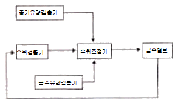

에너지관리기능장 (2011-07-31 기출문제)
1과목: 임의 구분
1. 상당증발량 2500kg/h, 매시 연료소비량 150kg인 보일러가 있다. 급수온도 28℃, 증기압력 10kgf/cm2일 때, 이 보일러의 효율은 약 몇 % 인가? (단, 연료의 저위발열량은 9800kcal/kg 이다.)
- 65%
- 77%
- 92%
- 98%
(정답률: 76%)

2. 다음 중 가스연료 연소 시에 발생하는 현상이 아닌 것은?
- 역화(back fire)
- 리프팅(lifting)
- 옐로우 팁(yellow tip)
- 증발(vaporizing)
(정답률: 72%)
3. 부하변동에 따른 적응성이 좋으며, 응축수를 연속적으로 배출하고 자동공기배출이 이루어지나 수격작용에 약하고, 고압증기배관에는 사용할 수 없는 증기트랩은?
- 디스크트랩
- 바이메탈트랩
- 버킷트랩
- 플로트트랩
(정답률: 69%)
4. 다음 중 보일러 스테이의 종류가 아닌 것은?
- 도그스테이
- 관스테이
- 가셋트스테이
- 더블스테이
(정답률: 64%)
5. 고온가스의 처리가 가능하므로 굴뚝 또는 배관 내에 장착하고 지름이 100㎛인 입자의 집진에 이용되며 집진효율이 50~70%인 장치로 구조가 간단한 집진장치는?
- 중력식 집진장치
- 원심력식 집진장치
- 관성력식 집진장치
- 여과식 집진장치
(정답률: 64%)
6. 분출장치의 설치목적이 아닌 것은?
- 관수의 농축 방지
- 관수의 pH 조절
- 스케일 생성 방지
- 저수위 방지
(정답률: 86%)
7. 창문 및 문을 포함한 벽체 면적이 48m2인 주택에 온수보일러를 설치하려고 한다. 외기온도가 -12℃, 실내온도가 20℃일 때 난방부하를 계산하면 약 얼마인가? (단, 이 주택의 벽체 열관류율은 6kcal/m2 · h ·℃, 방위계수는 1.⑤로 한다.)
- 2419 kcal/h
- 9216 kcal/h
- 8420 kcal/h
- 9677 kcal/h
(정답률: 41%)
8. 온수난방 분류에서 각층, 각실 간에 온수의 순환율이 동일하고 온도차를 최소화시키는 방식으로, 배관길이가 다소 길고 마찰저항이 커지는 단점이 있는 배관방법은?
- 직접귀환방식
- 역귀환방식
- 중력순환식
- 강제순환식
(정답률: 92%)
9. 증기보일러에서 안전밸브 및 압력방출장치의 크기를 20A로 할 수 있는 경우는?
- 최고사용압력 1Mpa 이하의 보일러
- 최고사용압력 0.5MPa 이하의 보일러로 전열면적 2m2 이하의 보일러
- 최고사용압력 0.7MPa 이하의 보일러로 동체의 안지름이 500mm 이하이며 동체의 길이가 1000mm 이하의 보일러
- 최대증발량 7t/h 이하의 관류보일러
(정답률: 83%)
10. 다음 중 안전장치의 종류가 아닌 것은?
- 방출밸브
- 가용마개
- 드레인 콕
- 수면고저경보기
(정답률: 88%)
11. 보일러 연소실에서 발생한 연소가스가 굴뚝까지 이르는 통로는?
- 연돌
- 연도
- 화관
- 댐퍼
(정답률: 93%)
12. 진공환수식 증기난방의 설명 중 틀린 것은?
- 진공 펌프에 베큐엄 브레이커를 설치하여 진공도가 높아지면 밸브를 열어서 진공도를 낮춘다.
- 배관 및 방열기 내의 공기도 뽑아내므로 증기의 순환이 빠르다.
- 환수파이프와 보일러사이에 진공펌프를 설치하여 진공도를 유지시킨다.
- 방열기 설치장소에 제한을 받고 방열량 조절이 좁다.
(정답률: 81%)
13. 복사난방의 특징에 대한 설명으로 틀린 것은?
- 방열기가 불필요하므로 바닥면의 이용도가 높다.
- 외기온도의 변화에 따라 실내의 온도, 습도조절이 쉽다.
- 복사열에 의한 난방이므로 쾌감도가 좋다.
- 실내의 온도 분포가 균등하다.
(정답률: 83%)
14. 회전식 버너의 특징을 설명한 것으로 틀린 것은?
- 기름은 보통 0.3 kgf/cm2 정도 가압하여 공급한다.
- 분무각도는 유속 또는 안내 깃에 따라 40~80° 의 범위로 할 수 있다.
- 화염의 형상이 비교적 넓고 안정한 연소를 시킬 수 있다.
- 유량의 조절범위는 1 : 5 정도로 좁고, 유량이 적을수록 무화가 잘 된다.
(정답률: 80%)
15. 다음 중 절탄기에 대항 설명한 것으로 옳은 것은?
- 증기를 이용하여 급수를 예열하는 장치
- 보일러의 여열을 이용하여 급수를 예열하는 장치
- 보일러의 여열을 이용하여 공기를 예열하는 장치
- 연도 내에서 고온의 증기를 만드는 장치
(정답률: 77%)
16. 중유의 연소성상을 개선하기 위한 첨가제의 종류가 아닌 것은?
- 연소촉진제
- 착화지연제
- 슬러지분산제
- 회분개질제
(정답률: 84%)
17. 증기보일러의 용량을 표시하는 방법이 아닌 것은?
- 보일러의 마력
- 상당증발량
- 정격출력
- 연소효율
(정답률: 75%)
18. 증기보일러의 압력계 부착에 대한 설명 중 틀린 것은?
- 증기가 직접 압력계에 들어가지 않도록 안지름 6.5mm 이상의 사이폰관을 설치한다.
- 압력계와 연결된 증기관이 강관일 때 그 안지름은 12.7mm 이상이어야 한다.
- 증기온도가 483K(210℃)를 초과할 때 압력계와 연결 되는 증기관은 황동관 또는 동관으로 하여야 한다.
- 압력계와 연결되는 증기관은 최고사용압력에 견디는 것으로 한다.
(정답률: 79%)
19. 지역난방에 대한 설명 중 틀린 것은?
- 고압의 증기 및 고온수를 사용하므로 관지름을 크게 하여야 한다.
- 각 건물마다 보일러 시설이 필요 없다.
- 열 발생설비의 고 효율화, 대기오염의 방지를 효과적으로 할 수 있다.
- 연료비와 인건비를 줄일 수 있다.
(정답률: 86%)
20. 다음 아래 그림은 몇 요소 수위제어 방식을 나타낸 것인가?

- 1요소 수위제어
- 2요소 수위제어
- 3요소 수위제어
- 4요소 수위제어
(정답률: 85%)
2과목: 임의 구분
21. 보일러의 급수장치 중 급수펌프의 구비조건에 대한 설명으로 틀린 것은?
- 조작이 간단하고 보수가 용이할 것
- 저 부하에서도 효율이 좋을 것
- 고온, 고압에 견딜 것
- 병렬운전에 지장이 있을 것
(정답률: 88%)
22. 탄소(C) 1kg을 완전 연소시키는 데 필요한 이론 공기량은 약 얼마인가?
- 8.89 Nm3
- 3.33 Nm3
- 1.87 Nm3
- 22.4 Nm3
(정답률: 69%)
23. 증기배관 내 공기를 제거하는 방법으로 틀린 것은?
- 탈기기 설치로 용존산소 등 불응축 가스를 제거한다.
- 응축수 회수율을 감소시킨다.
- 수 처리제를 사용해 가스발생을 억제한다.
- 에어벤트를 설치한다.
(정답률: 71%)
24. 유체의 흐름 층이 교란하지 않고 흐르는 흐름을 무엇이라고 하는가?
- 정상류
- 난류
- 보통류
- 층류
(정답률: 81%)
25. 평판을 사이에 두고 고온유체와 저온유체가 접하고 있는 경우 열관류율에 영향을 미치지 않는 것은?
- 평판의 열전도율
- 평판의 면적
- 평판의 두께
- 고온 및 저온유체 열전달율
(정답률: 62%)
26. 어떤 2개의 물체가 또 다른 제3의 물체와 서로 열평형을 이루고 있으면 그 2개의 물체도 서로 열평형 상태이다." 라고 정의하는 열역학 법칙은?
- 열역학 제0법칙
- 열역학 제1법칙
- 열역학 제2법칙
- 열역학 제3법칙
(정답률: 75%)
27. 유체 속에 잠겨진 물체에 작용하는 부력에 대한 설명으로 옳은 것은?
- 그 물체에 의해서 배제된 유체의 무게와 같다.
- 물체의 중력보다 크다.
- 유체의 밀도와는 관계가 없다.
- 물체의 중력과 같다.
(정답률: 80%)
28. 보일러 내 처리에 사용되는 약제의 종류 및 작용에서 탈산소제로 쓰이는 약품이 아닌 것은?
- 수산화나트륨
- 탄닌
- 히드라진
- 아황산나트륨
(정답률: 60%)
29. 이온교환처리장치의 운전공정에서 재생탑에 원수를 통과시켜 수중의 일부 또는 전부의 이온을 이온교환 또는 제거시키는 공정을 의미하는 것은?
- 통약
- 압출
- 부하
- 수세
(정답률: 79%)
30. 자동측정기에 의한 아황산가스의 연속측정방법에 속하지 않는 것은?
- 적외선 흡수법
- 자외선 흡수법
- 올자트가스 분석법
- 불꽃광도법
(정답률: 70%)
31. 보일러 내면에서 발생하는 점식(pitting)의 방지법이 아닌 것은?
- 용존산소를 제거한다.
- 아연판을 매단다.
- 내면에 도료를 칠한다.
- 브리징 스페이스를 크게 한다.
(정답률: 89%)
32. 원형 직관 속을 흐르는 유체의 손실수도에 대한 설명으로 틀린 것은?
- 관의 길이에 비례한다.
- 속도수두에 반비례한다.
- 관의 내경에 반비례한다.
- 관 마찰계수에 비례한다.
(정답률: 64%)
33. 순수한 물 1lb(파운드)를 표준대기압하에서 1℉높이는데 필요한 열량을 나타낼 때 쓰이는 단위는?
- Chu
- MPa
- Btu
- kcal
(정답률: 92%)
34. 액체연료의 일반적인 특징 설명으로 틀린 것은?
- 석탄에 비하여 연소효율이 낮다.
- 석탄에 비하여 연소조절이 용이하다.
- 석탄에 비하여 재와 그을음이 적다.
- 석탄에 비하여 고온을 얻기가 쉽다.
(정답률: 91%)
35. 보일러 수 분출에 대한 설명 중 틀린 것은?
- 분출장치는 스케일, 슬러지 등으로 막히는 일이 있으므로 1일 1회 이상 분출한다.
- 분출하고 있는 사이에는 다른 작업을 해서는 안 된다.
- 분출작업을 마친 후에는 밸브 또는 콕크가 확실하게 열려있는지 확인한다.
- 연속 사용하는 보일러는 부하가 가장 약할 때 분출한다.
(정답률: 83%)
36. 분자량이 18인 수증기를 완전가스로 가정할 때, 표준상태 하에서의 비체적은 약 m3/kg 인가?
- 0.5
- 1.24
- 2.0
- 1.75
(정답률: 53%)
37. 세관할 때 규산염, 황산염 등 경질 스케일의 경우 사용되는 용해촉진제로 맞는 것은?
- NH3
- Na2CO3
- 히드라진
- 불화수소산(HF)
(정답률: 66%)
38. 보일러의 용수처리 중 현탁질 고형물의 처리 시 사용하는 방법이 아닌 것은?
- 침강법
- 여과법
- 이온교환법
- 응집법
(정답률: 70%)
39. 냉동 사이클의 이상적인 사이클은 어느 것인가?
- 오토 사이클
- 디젤 사이클
- 스털링 사이클
- 역카르노 사이클
(정답률: 90%)
40. 보일러 수중의 용존산소에 의한 국부전지가 구성되어 생기는 전기화학적 부식은?
- 고온부식
- 점식
- 구식
- 가성취화
(정답률: 78%)
3과목: 임의 구분
41. 에너지법에서 정한 "에너지기술개발계획"에 포함되지 않는 사항은?
- 에너지기술에 관련된 인력·정보·시설 등 기술개발 자원의 축소에 관한 사항
- 개발된 에너지기술의 실용화의 촉진에 관한 사항
- 국제에너지기술협력의 촉진에 관한 사항
- 온실가스 배출을 줄이기 위한 기술개발에 관한 사항
(정답률: 74%)
42. 에너지저장시설의 보유 또는 저장의무의 부과 시 정당한 이유 없이 이를 거부하거나 이행하지 아니한 자에 대한 벌칙 기준은?
- 2년 이하의 징역 또는 2천만원 이하의 벌금
- 2천만원 이하의 벌금
- 1년 이하의 징역 또는 1천만원 이하의 벌금
- 1천만원 이하의 벌금
(정답률: 73%)
43. 플랜지 종류 중 극히 기밀이 요구되는 경우와 16kgf/cm2 이상의 위험성이 있는 유체배관에 사용하는 것으로 채털형 시트라고도 하는 것은?
- 홈꼴형 시트
- 전면 시트
- 소평면 시트
- 대평면 시트
(정답률: 78%)
44. 주로 350℃를 초과하는 온도에서 증기관 등 고온 유체 수송관에 사용되는 고온 배관용 탄소강관의 기호는?
- SPPH
- SPA
- SPHT
- SPLT
(정답률: 82%)
45. 다음 중 배관의 지지장치에 대한 설명으로 옳은 것은?
- 행거(hanger)는 아래에서 배관을 지지하는 장치이다.
- 서포트(supporter)는 위에서 걸어 당김으로써 지지하는 장치이다.
- 레스트레인트(restraint)는 열팽창에 의한 자유로운 움직임을 구속 또는 제한하는 장치이다.
- 브레이스(brace)는 열팽창이나 부력에 의한 처짐을 제한하는 장치이다.
(정답률: 87%)
46. 다음 중 증기난방 배관에 대한 설명으로 틀린 것은?
- 단관중력환수식은 방열기 밸브를 반드시 방열기의 아래 쪽 태핑에 단다.
- 진공환수식은 응축수를 방열기보다 위쪽의 환수관으로 배출할 수 있다.
- 기계환수식은 각 방열기 마다 공기빼기 밸브를 설치할 필요가 없다.
- 습식환수관의 주관은 보일러 수면보다 높은 곳에 배관한다.
(정답률: 56%)
47. 스테인리스(stainless)강의 내식성(耐蝕性)과 가장 관계가 깊은 것은?
- 철(Fe)
- 크롬(Cr)
- 알루미늄(Al)
- 구리(Cu)
(정답률: 93%)
48. 다음 보온재의 종류 중 최고안전사용온도(℃)가 가장 낮은 것은?
- 석면
- 글라스 울
- 우모 펠트
- 암면
(정답률: 78%)
49. 피복 아크 용접에서 자기쏠림 현상을 방지하는 방법으로 옳은 것은?
- 직류용접을 사용할 것
- 접지점을 될 수 있는 대로 용접부에서 멀리할 것
- 용접봉 끝을 아크 쏠림과 동일 방향으로 기울일 것
- 긴 아크를 사용할 것
(정답률: 86%)
50. 배관도에서 "EL-300TOP"로 표시된 것의 설명으로 옳은 것은?
- 파이프 윗면이 기준면보다 300mm 높게 있다.
- 파이프 윗면이 기준면보다 300mm 낮게 있다.
- 파이프 밑면이 기준면보다 300mm 높게 있다.
- 파이프 밑면이 기준면보다 300mm 낮게 있다.
(정답률: 83%)
51. 감압밸브를 작동방법에 따라 분류할 때 해당되지 않는 것은?
- 벨로스형(bellows type)
- 파일럿형(pilot type)
- 피스톤형(piston type)
- 다이어프램형(diaphram type)
(정답률: 70%)
52. 관 공작 시 강관용 또는 측정용 공구로 사용되는 것이 아닌 것은?
- 로프로스트
- 수준기
- 파이프 커터
- 파이프 리머
(정답률: 63%)
53. 다음 중 동관의 이음 방법이 아닌 것은?
- 몰코 이음
- 플랜지 이음
- 납땜 이음
- 압축 이음
(정답률: 83%)
54. 열사용기자재관리규칙에 따른 특정열사용 기자재 및 설치·시공범위에서 품목명에 해당되지 않는 것은?
- 태양열집열기
- 1종압력용기
- 회전가마
- 축열식증기보일러
(정답률: 39%)
55. 어떤 측정법으로 동일 시료를 무환회 측정하였을 때 데이터 분포의 평균치와 참값과의 차를 무엇이라 하는가?
- 재현성
- 안정성
- 반복성
- 정확성
(정답률: 85%)
56. 관리도에서 측정한 값을 차례로 타점했을 때 쩜이 순차적으로 상승하거나 하강하는 것을 무엇이라 하는가?
- 연(run)
- 주기(cycle)
- 경향(trend)
- 산포(dispersion)
(정답률: 75%)
57. 도수분포표를 작성하는 목적으로 볼 수 없는 것은?
- 로트의 분포를 알고 싶을 때
- 로트의 평균치와 표준편차를 알고 싶을 때
- 규격과 비교하여 부적합품률을 알고 싶을 때
- 주요 품질항목 중 개선의 우선순위를 알고 싶을 때
(정답률: 64%)
58. 정상소요기간이 5일이고, 이때의 비용이 20,000원 이며 특급소요기간이 3일이고, 이때의 비용이 30,000원이라면 비용구배는 얼마인가?
- 4,000원/일
- 5,000원/일
- 7,000원/일
- 10,000원/일
(정답률: 71%)
59. "무결점 운동"으로 불리는 것으로 미국의 항공사인마틴사에서 시작된 품질개선을 위한 동기부여 프로그램은 무엇인가?
- ZD
- 6 시그마
- TPM
- ISO 9001
(정답률: 87%)
60. 컨베이어 작업과 같이 단조로운 작업은 작업자에게 무력감과 구속감을 주고 생산량에 대한 책임감을 저하시키는 등 폐단이 있다. 다음 중 이러한 단조로운 작업의 결함을 제거하기 위해 채택되는 직무설계방법으로서 가장 거리가 먼 것은?
- 자율경영팀 활동을 권장한다.
- 하나의 연속작업시간을 길게 한다.
- 작업자 스스로가 직무를 설계하도록 한다.
- 직무확대, 직무충실화 등의 방법을 활용한다.
(정답률: 89%)
먼저, 상당증발량 2500kg/h는 1시간에 2500kg의 물이 증발하여 증기가 발생한다는 것을 의미한다. 이 증기는 보일러의 열에 의해 발생하므로, 이를 계산하기 위해서는 보일러의 열효율을 알아야 한다.
열효율은 보일러의 발생한 증기량 대비 보일러에 공급된 열의 비율을 나타내는 값이다. 이 값은 보일러의 종류, 설계 등에 따라 다르지만, 일반적으로 80% ~ 90% 정도이다. 여기서는 보일러의 효율이 92%라고 가정하고 계산해보자.
먼저, 보일러의 발생한 증기량은 상당증발량과 같으므로 2500kg/h이다. 이 증기는 10kgf/cm2의 압력을 가지므로, 증기표에서 이에 해당하는 온도를 찾아보면 약 184℃이다.
다음으로, 연료 소비량은 150kg/h이다. 이 연료의 저위발열량은 9800kcal/kg이므로, 1시간에 공급된 열량은 150kg × 9800kcal/kg = 1,470,000kcal이다.
따라서, 보일러의 효율은 (2500kg/h × 184℃의 증기열 / 1,470,000kcal) × 100 = 92%가 된다.
따라서, 정답은 "92%"이다.